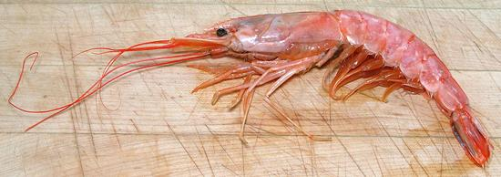

Giant Red Shrimp

[Aristaeomorpha foliacea]
These are deep water shrimp, little known until recently - and yes,
they are this red before cooking. They are found worldwide from the
tropics to near the arctic, at depths between 820 and 2450 feet.
They can grow to almost 8-7/8 inches measured from the tip of the
rostrum (the toothy spikes at the top of the head extending over the
eyes) to the tip of the tail. The average is about 5-1/2 inches. The
photo specimen was just short of 8 inches.
Interestingly, these benthic shrimp contain much less red pigment
than regular shrimp, but what they have isn't hidden under a layer of
green-gray protein.
More on Shrimp & Prawns.
In my opinion, these shrimp tasted more like lobster than regular
shrimp do.
Buying:
These appear now and then in the Asian markets
in Southern California. They are not a shrimp you go out and buy, the
are a shrimp you buy when you see them. The photo specimen was purchased
from a Philippine market in Los Angeles (Eagle Rock) at 2014 US $8.99 /
pound, labeled "Red Hon Shrimp" ("hon" generally means "true" in
Japanese).
Shelling:
These are more difficult to peel than regular
shrimp because the shell is thick, stiff and relatively heavy.
De-veining:
The gut can be drawn out the same as for
regular shrimp (see our page Working with
Shrimp & Prawns).
Yield:
Total weight of the photo specimen was 2-1/4
ounces. Tail only was 1-1/4 ounce (56%), and shelled tail was 7/8 ounce
(39%). The unusually large loss in shelling is because of the thickness
of the shell compared to many other shrimp.
sf_shmpgrz 160622 - www.clovegarden.com
©Andrew Grygus - agryg@aaxnet.com - Linking to and
non-commercial use of this page is permitted.